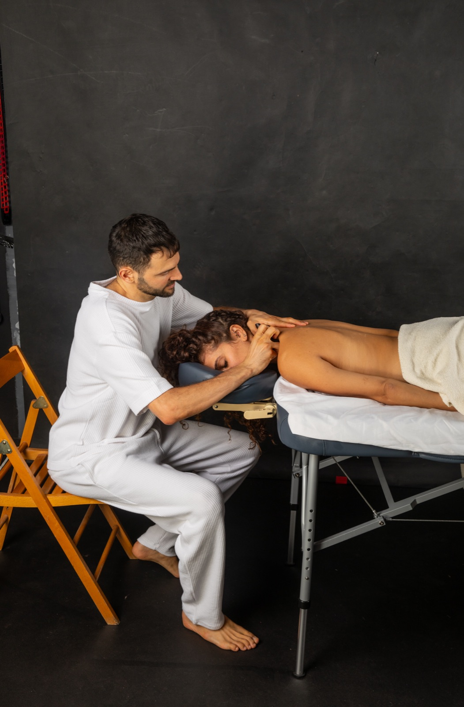
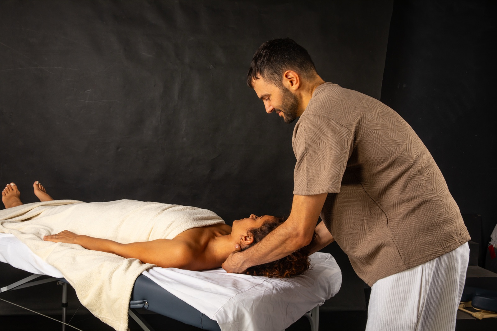

גב, צוואר וכתפיים
לימים ארוכים מול מסך, לנהיגה, ולמתח שנתקע בכתפיים.
ידיים של עיסוי רפואי, פינוק של ספא. שעה ורבע בקליניקה פרטית למרגלות הכרמל - כדי לצאת קלים, רגועים ונינוחים בגוף.
היה מעולה, מפנק ומושקע! הגב מרגיש הרבה יותר טוב והתחושה מצוינת.יום אחרי הטיפול
הצוואר מתקשה כבר בצהריים, אחרי עוד יום מול המסך.
הגב התחתון שוב מזכיר את עצמו - בבוקר, בנהיגה, אחרי שמרימים את הילדים.
המתח של התקופה נכנס לכתפיים ולא יוצא, גם בלילה.
באמצע השבוע אין זמן. בסוף השבוע כבר אין כוח.
הגוף לא צריך עוד "מסאז' נחמד". הוא צריך מישהו שיבין מאיפה הכאב מגיע - וזמן להשתחרר באמת.
מה כואב, ממתי, ואיך נראה היום-יום שלכם - כדי שהטיפול יתאים לכם.
אני עובד על השרירים התפוסים בעוצמה שמתאימה לכם, ותמיד אפשר לכוון את הלחץ תוך כדי.
כמה טיפים פשוטים לבית - תנועה, נשימה והרגלים - כדי שההקלה תימשך.
אני מטפל בגוף כולו - מהראש ועד כפות הרגליים. בכל טיפול בוחרים איפה לשים את הדגש, או מחליטים ביחד בשיחה בהתחלה.

לימים ארוכים מול מסך, לנהיגה, ולמתח שנתקע בכתפיים.

מהראש ועד כפות הרגליים, בקצב רגוע. כשהגוף פשוט צריך לנשום.

ליום שלם על הרגליים, לאימונים ולהליכות ארוכות.
אני מביא לטיפול את מה שלמדתי בעיסוי רפואי - הבנה של שרירים, רקמות ונקודות שנתפסות - ועושה את זה בשקט, בנעימות ובלי למהר. הקליניקה נמצאת בבית שלי בגבע כרמל, מושב קטן ושקט למרגלות הכרמל.
עבודה על רקמות עמוקות ונקודות טריגר. חשוב לי להבין מה המקור לכאב, ולא רק ללחוץ על הנקודה שמציקה עכשיו.
אחרי עבודה בספא יוקרה בקיסריה, הבאתי את אותה תשומת לב לקליניקה: אור רך, שמנים אתריים ונוכחות מלאה.
שעה ורבע, לא 45 דקות. ובשעות שבהן באמת יש לכם זמן: שישי, מוצ"ש וראשון בערב.
מאז שהייתי ילד אהבתי לעשות מסאז' - לסבא ולאבא שלי, לאחים שלי ולחברים.
אחרי ה-7 באוקטובר הרגשתי שאני רוצה לעזור לאנשים, והחלטתי ללמוד טיפול במגע. אני מאמין שכאב באיבר מסוים לא מנותק משאר הגוף, וגם לא מהנפש. לכן הלכתי ללמוד עיסוי רפואי הוליסטי במכללת כרכור, וסיימתי ב-2024.
אחר כך עבדתי בספא יוקרה בקיסריה. שם הבנתי כמה השקט, היחס והפרטים הקטנים חשובים לא פחות מהטכניקה. כבר שנתיים אני מטפל, ועכשיו בקליניקה שלי בגבע כרמל.
כשאני רואה אנשים יוצאים מהטיפול רגועים, רפויים, קלילים ושמחים - אני מרגיש משמעות וסיפוק גדולים.
לקביעת טיפול ←"היה מעולה, מפנק ומושקע! הגב מרגיש הרבה יותר טוב והתחושה מצוינת."
מתוך הודעת וואטסאפ, יום אחרי הטיפולהמלצה נוספת
בקרובסרטון המלצה
בקרובהלחץ מותאם אליכם ואפשר לשנות אותו בכל רגע. בעבודה על נקודות תפוסות יכולה להיות תחושה חזקה, אבל תמיד בגבול הנוח.
שואלים אותי את זה הרבה, ואני מבין לגמרי. חשוב לי שתרגישי בנוח מהרגע שאת נכנסת ועד שאת יוצאת.
בהתחלה אנחנו מדברים כמה דקות ומחליטים ביחד על אילו אזורים עובדים - ורק עליהם. את מחליטה מה להוריד: התחתונים נשארים, ואפשר גם להישאר בבגדים קלים. כל הזמן את מכוסה במגבת, ורק האזור שאני עובד עליו באותו רגע פתוח. החזה והאזורים האינטימיים תמיד מכוסים.
במהלך הטיפול אני שואל איך הלחץ ואיך את מרגישה. אם משהו לא נוח, אפשר לעצור או לשנות בכל רגע, בלי להסביר. ואם יותר נעים לך להגיע עם מישהו, זה בסדר גמור.
רוצה לשאול משהו לפני שקובעים? כתבי לי בוואטסאפ.
הרבה אנשים מרגישים הקלה כבר אחרי הטיפול הראשון. לכאב ותיק שחוזר, בדרך כלל כדאי כמה טיפולים ברצף - ובשביל זה יש סדרות של 3 ושל 7.
ספרו לי לפני הטיפול. במקרים מסוימים נתאים את הטיפול, ולפעמים נבקש קודם אישור רופא.
שום דבר. מגבות ושמנים יש בקליניקה. כדאי להגיע כמה דקות לפני, בלי למהר.
אפשר לבטל או להזיז בלי עלות עד 24 שעות לפני הטיפול, בהודעה בוואטסאפ. ביטול מאוחר יותר: 50% מהמחיר. במקרים של מחלה, מילואים או חירום - בלי חיוב. למדיניות הביטולים המלאה.
דרך הערבה 48, גבע כרמל - קרוב לעתלית, עין הוד, טירת כרמל ודרום חיפה.
כתפיים רכות יותר. נשימה עמוקה יותר. גוף שמרגיש שדאגו לו.
משאירים פרטים ובוחרים מועד. זה לוקח דקה.
רוצים לדבר קודם?